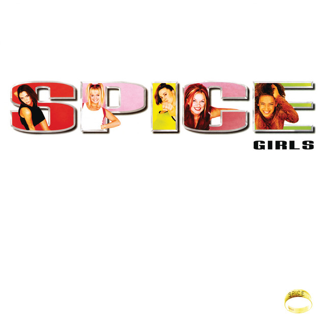
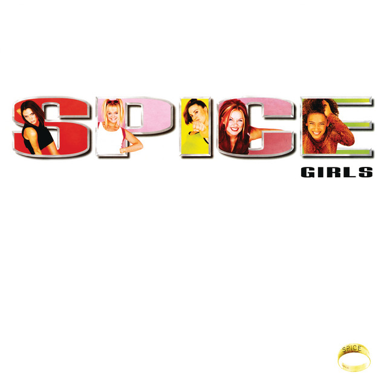

Some Of My Favorite Pokemon!
Pokemon has been an important part of my life for a long time! It was one of the first things I knew as my older sibling would sit me down and quiz me on Pokemon cards. The following Pokemon are Dunsparce, Salamence, Croagunk, Dhelmise, Kingler, and Dracovish. I love them all for various reasons, some I find cute, some I think are cool, but I enjoy how silly Pokemon like Croagunk, Dracovish, and Dunsparce (my #1) can be!
I also really like aquatic themed Pokemon as seen with Dracovish (A fish/dinosaur hybrid), Dhelmise (A ghost haunting the remains of a shipwreck), and Kingler (This one is just an angry looking crab).
My "On Repeat" Songs!
In order, my top songs at the moment have to be:
- Be Alone: The Living Tombstone
- Smitten: Leana Firestone
- I Was Made For Lovin' You: KISS
- What You Need: Grace Yurchuk
- Who Do You Think You Are: Spice Girls
- Dancing In The Moonlight: King Harvest
Be Alone has been my number one because of how it talks about a lot of ongoing issues with lyrics that resonate with me. To contrast this my number two song is my girlfriend's favorite love song by her favorite artist.
The rest of the order changes on a day by day basis, but What You Need is special to me because a friend of mine, Grace Yurchuk, is the singer songwriter behind it plus so many other wonderful songs, go listen to her here!
 

My Indie Game Recommendations
I could write essays upon essays about why these games are incredible, so I'll keep my reviews brief
The Upturned is a weird mix of genres, it is a physics based, horror themed, comedic, platformer. That alone was enough to convince me to try the game, but I was surprised by amazing level design, unique graphics, and a wonderful story!
Lunacid, is a marvelous first person RPG that sucks you into a strange world. Playing Lunacid is like playing older games without a guide book and having to discover so much about the world around you. Pair this with a great cast of characters, stunning gameplay, and a wonderful emulation of retro-ish graphics and Lunacid will forever be one of my favorite games.
Tactical Breach Wizards, disguised as a top down, grid based, tactical unit based shooter, is secretly the most fun puzzle game I've ever played. Level's aren't about brute force, it's about combining the unique abilities of your ever expanding group of heroes to complete challenges and attempt to trivialize daunting combat encounters. Once again, this game has amazing characters, hilarious dialogue, and is a blast!
Another Crab's Treasure is modeled after Soulsborne games, those being a specific series of challenging, dark, combat based RPGs developed by Fromsoftware. Now take that concept and apply it to a cute hermit crab just trying to get his home back and you get a terrific game that kept me coming back for more every time I tried to step away. Not to sound like a broken record, but this game is amazing from a writing and character perpsective, but also from a gameplay perspective, I can't recommend it enough.
Nightmare Kart actually continues my discussion of Soulsborne games as it asks the question of "what if we take a dark, horror RPG about the sins of mankind and the horrors of our own bodies and turn it into a really fun racing game?" The answer is Nightmare Kart, which is my favorite racing game I've ever played (Sorry Mario Kart). This game also utilized Playstation 1 styled retro graphics as well as some fun spins on the racing genre (such as adding in firearms and other weapons as well as some unique boss fights). If you like racing games or Fromsoftware games, I highly recommend you humor Nightmare Kart.
Ultrakill is the last game on my list, and interestingly enough it isn't out of development yet. The game has so much more that is being worked on, yet has an incredible amount of fun content already packed into it. Ultrakill is like the evolution of those old school shooter games, but jacked up to eleven! It utilizes incredibly fun movement and gunplay mechanics as well as encouraging you to go for stylish plays as a way to keep the gameplay fresh and fun through the entire campaign (that we have access to so far). I would say to watch Ultrakill's development closely and pick it up if you are looking for a fun new shooter to play!